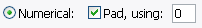
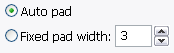
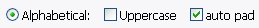
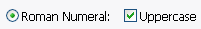
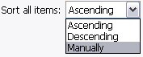
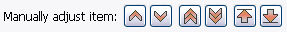
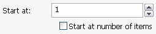
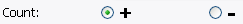
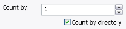
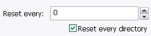

This is the default style of numbering sequence, using regular numbers. By default the
Pad is checked for proper sorting of filenames. You can use any valid character
for the padding.

Here you can set more padding options for Numerical numbering. By default,
Autopad is used to make all numbering the same length regardless of how
many items are being renamed. However if you need a Fixed pad width, you can
also specify that.

Use this option if you want to renumber alphabeticaly. By default, auto pad is
enabled, this makes all numbering have the same length for correct sorting. You may use
either lowercase or uppercase letters.

Use this option if you want to renumber by roman numeral. Note that all numbers
must be between 1 and 4999, due to a limitation of this number system. If there are
numbers with greater or lesser value an error will occur.
Normally roman numerals are uppercase, however you can uncheck the checkbox if you
want lowercase.

This allows you to change the order in which items will be numbered. Ascending numbers
items in the normal way: 1,2,3,4, Descending is reversed numbering: 4,3,2,1, and
Manually numbers items in the order in which they are selected in the
selection area, and allows you to change item order manually.
Note that if you use the all button to select items with the
No Sorting option, items will be sorted in ascending order.

If sort all items is set to Manually, then you can click on an item in the preview list
to select it, then move the item within the list using the buttons.
From left to right: move up by 1, move down by 1, move up by 5, move down by 5, move to top of list, move to bottom.


This is the starting value for the numbering. Number will be converted to its
alphabetical or roman numeral equivalent, if either of those are being used.
If Start at number of items is checked, then the starting value is calculated
automatically from the total number of items you are renaming.

Specify which way to count. You can go as negative as you want, however,
this will cause errors if using alphabetical or roman numerals.

Specify the count increment. If Count by directory is checked, then
the count is only changed when the directory changes.

Specify if you want the count to reset after a certain number of items, this is regardless
of the value. '0' means 'do not reset'. Can be used in conjunction with reset count
every directory.
When used in conjunction with the 'walk' option in picker, reset count
every directory will reset numbering every time the directory changes. Great for renumbering
whole mp3 albums several albums at a time!